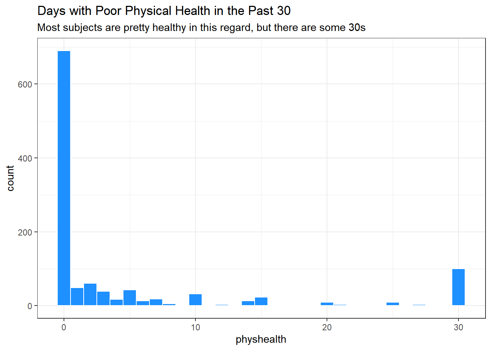
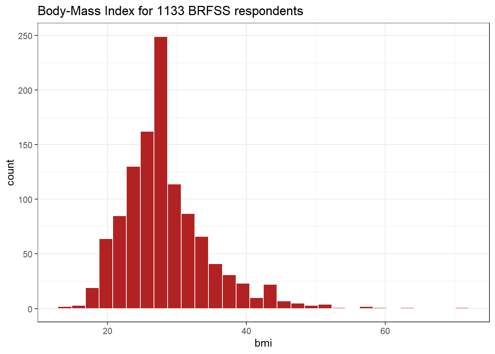
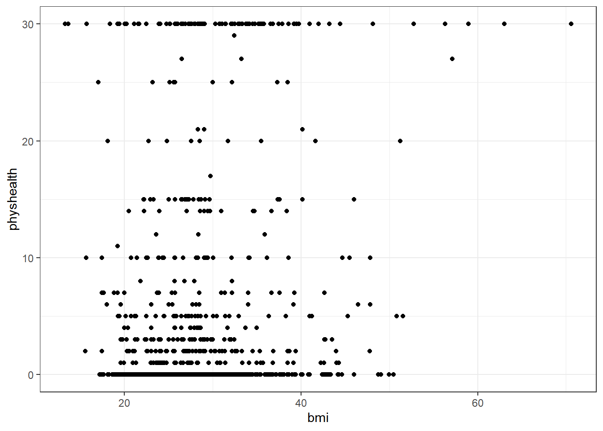
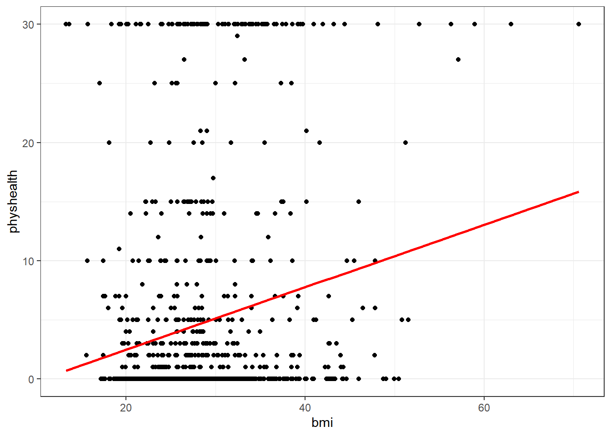
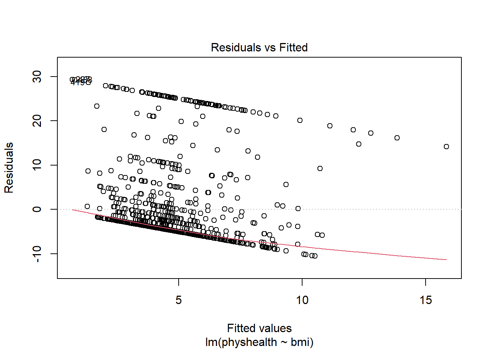
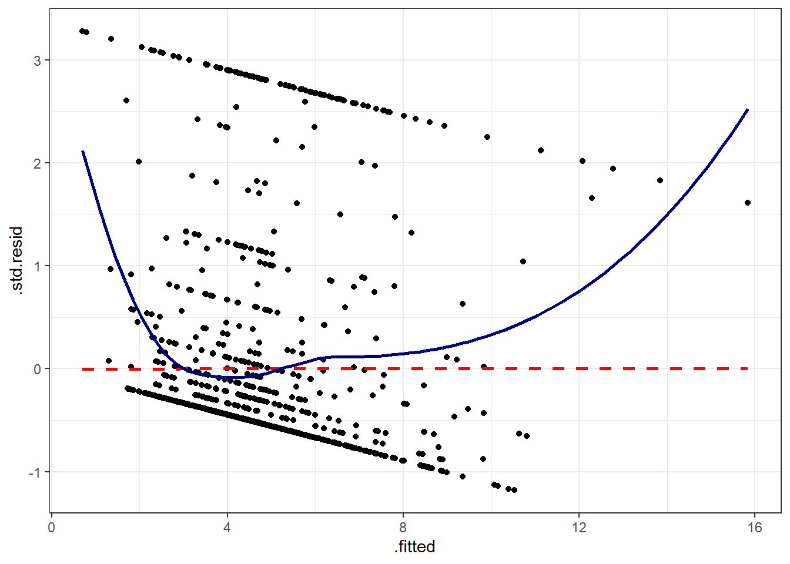
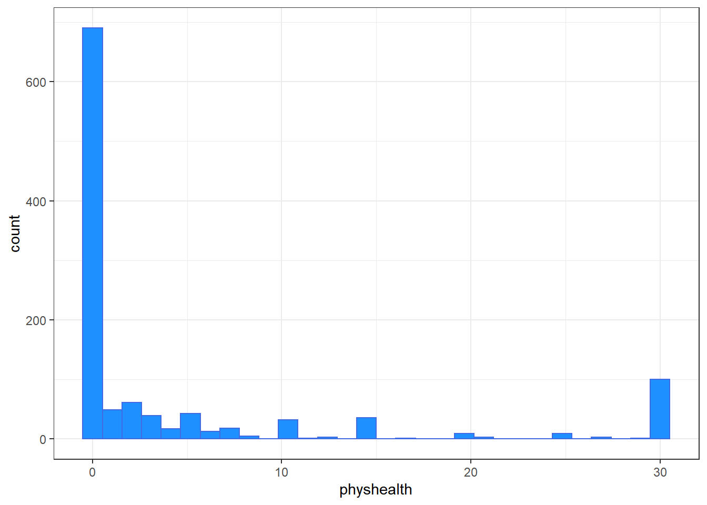
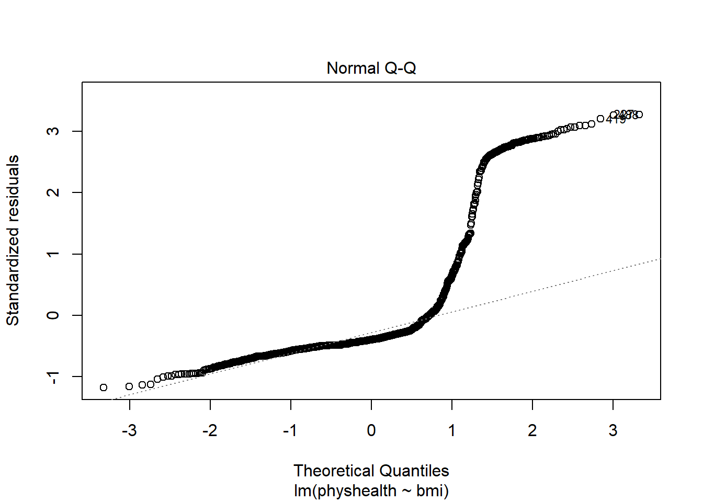

Chapter 4 Summarizing the smart_cle1 data
In this chapter, we’ll work with the two data files we built in the previous chapter.
smart_cle1_sh <- readRDS(here("data", "smart_cle1_sh.Rds"))
smart_cle1_cc <- readRDS(here("data", "smart_cle1_sh.Rds"))Those files (_sh contains single imputations, and a shadow set of variables which have _NA at the end of their names, while _cc contains only the complete cases) describe information on the following variables from the BRFSS 2017, who live in the Cleveland-Elyria, OH, Metropolitan Statistical Area.
| Variable | Description |
|---|---|
SEQNO |
respondent identification number (all begin with 2016) |
physhealth |
Now thinking about your physical health, which includes physical illness and injury, for how many days during the past 30 days was your physical health not good? |
genhealth |
Would you say that in general, your health is … (five categories: Excellent, Very Good, Good, Fair or Poor) |
bmi |
Body mass index, in kg/m2 |
age_imp |
Age, imputed, in years |
female |
Sex, 1 = female, 0 = male |
race_eth |
Race and Ethnicity, in five categories |
internet30 |
Have you used the internet in the past 30 days? (1 = yes, 0 = no) |
smoke100 |
Have you smoked at least 100 cigarettes in your life? (1 = yes, 0 = no) |
activity |
Physical activity (Highly Active, Active, Insufficiently Active, Inactive) |
drinks_wk |
On average, how many drinks of alcohol do you consume in a week? |
veg_day |
How many servings of vegetables do you consume per day, on average? |
4.1 General Approaches to Obtaining Numeric Summaries
4.1.1 summary for a data frame
Of course, we can use the usual summary to get some basic information about the data.
summary(smart_cle1_cc) SEQNO physhealth genhealth bmi
Min. :2.017e+09 Min. : 0.000 1_Excellent:164 Min. :13.30
1st Qu.:2.017e+09 1st Qu.: 0.000 2_VeryGood :386 1st Qu.:24.38
Median :2.017e+09 Median : 0.000 3_Good :365 Median :27.31
Mean :2.017e+09 Mean : 4.681 4_Fair :158 Mean :28.35
3rd Qu.:2.017e+09 3rd Qu.: 4.000 5_Poor : 60 3rd Qu.:31.08
Max. :2.017e+09 Max. :30.000 Max. :70.56
age_imp female race_eth
Min. :18.00 Min. :0.0000 White non-Hispanic :824
1st Qu.:45.00 1st Qu.:0.0000 Black non-Hispanic :226
Median :58.00 Median :1.0000 Other race non-Hispanic : 24
Mean :57.33 Mean :0.5931 Multiracial non-Hispanic: 24
3rd Qu.:70.00 3rd Qu.:1.0000 Hispanic : 35
Max. :95.00 Max. :1.0000
internet30 smoke100 activity drinks_wk
Min. :0.0000 Min. :0.0000 Highly_Active :428 Min. : 0.000
1st Qu.:1.0000 1st Qu.:0.0000 Active :173 1st Qu.: 0.000
Median :1.0000 Median :0.0000 Insufficiently_Active:201 Median : 0.230
Mean :0.8164 Mean :0.4704 Inactive :331 Mean : 2.474
3rd Qu.:1.0000 3rd Qu.:1.0000 3rd Qu.: 2.100
Max. :1.0000 Max. :1.0000 Max. :56.000
veg_day SEQNO_NA physhealth_NA genhealth_NA bmi_NA age_imp_NA
Min. :0.000 !NA:1133 !NA:1109 !NA:1129 !NA:1042 !NA:1122
1st Qu.:1.270 NA : 0 NA : 24 NA : 4 NA : 91 NA : 11
Median :1.730
Mean :1.928
3rd Qu.:2.430
Max. :7.490
female_NA race_eth_NA internet30_NA smoke100_NA activity_NA drinks_wk_NA
!NA:1133 !NA:1107 !NA:1126 !NA:1093 !NA:1024 !NA:1067
NA : 0 NA : 26 NA : 7 NA : 40 NA : 109 NA : 66
veg_day_NA
!NA:1032
NA : 101
4.1.2 The inspect function from the mosaic package
smart_cle1_cc %>% mosaic::inspect()
categorical variables:
name class levels n missing
1 genhealth factor 5 1133 0
2 race_eth factor 5 1133 0
3 activity factor 4 1133 0
distribution
1 2_VeryGood (34.1%), 3_Good (32.2%) ...
2 White non-Hispanic (72.7%) ...
3 Highly_Active (37.8%) ...
quantitative variables:
name class min Q1 median Q3
...1 SEQNO numeric 2.017e+09 2.017e+09 2.017001e+09 2.017001e+09
...2 physhealth numeric 0.000e+00 0.000e+00 0.000000e+00 4.000000e+00
...3 bmi numeric 1.330e+01 2.438e+01 2.731000e+01 3.108000e+01
...4 age_imp numeric 1.800e+01 4.500e+01 5.800000e+01 7.000000e+01
...5 female numeric 0.000e+00 0.000e+00 1.000000e+00 1.000000e+00
...6 internet30 numeric 0.000e+00 1.000e+00 1.000000e+00 1.000000e+00
...7 smoke100 numeric 0.000e+00 0.000e+00 0.000000e+00 1.000000e+00
...8 drinks_wk numeric 0.000e+00 0.000e+00 2.300000e-01 2.100000e+00
...9 veg_day numeric 0.000e+00 1.270e+00 1.730000e+00 2.430000e+00
max mean sd n missing
...1 2.017001e+09 2.017001e+09 327.2132332 1133 0
...2 3.000000e+01 4.681377e+00 9.1208987 1133 0
...3 7.056000e+01 2.834932e+01 6.3651826 1133 0
...4 9.500000e+01 5.732568e+01 18.0803278 1133 0
...5 1.000000e+00 5.931156e-01 0.4914699 1133 0
...6 1.000000e+00 8.164166e-01 0.3873150 1133 0
...7 1.000000e+00 4.704325e-01 0.4993454 1133 0
...8 5.600000e+01 2.473689e+00 5.6900315 1133 0
...9 7.490000e+00 1.927926e+00 1.0412415 1133 0
shade variables:
name class levels n missing
1 SEQNO_NA shade 2 1133 0
2 physhealth_NA shade 2 1133 0
3 genhealth_NA shade 2 1133 0
4 bmi_NA shade 2 1133 0
5 age_imp_NA shade 2 1133 0
6 female_NA shade 2 1133 0
7 race_eth_NA shade 2 1133 0
8 internet30_NA shade 2 1133 0
9 smoke100_NA shade 2 1133 0
10 activity_NA shade 2 1133 0
11 drinks_wk_NA shade 2 1133 0
12 veg_day_NA shade 2 1133 0
distribution
1 !NA (100%), NA (0%)
2 !NA (97.9%), NA (2.1%)
3 !NA (99.6%), NA (0.4%)
4 !NA (92%), NA (8%)
5 !NA (99%), NA (1%)
6 !NA (100%), NA (0%)
7 !NA (97.7%), NA (2.3%)
8 !NA (99.4%), NA (0.6%)
9 !NA (96.5%), NA (3.5%)
10 !NA (90.4%), NA (9.6%)
11 !NA (94.2%), NA (5.8%)
12 !NA (91.1%), NA (8.9%) 4.1.3 The describe function in Hmisc
This provides some useful additional summaries, including a list of the lowest and highest values (which is very helpful when checking data.)
smart_cle1_cc %>%
select(bmi, genhealth, female) %>%
Hmisc::describe().
3 Variables 1133 Observations
--------------------------------------------------------------------------------
bmi
n missing distinct Info Mean Gmd .05 .10
1133 0 558 1 28.35 6.681 20.09 21.37
.25 .50 .75 .90 .95
24.38 27.31 31.08 36.37 40.44
lowest : 13.30 13.64 15.59 15.71 15.75, highest: 56.31 57.12 58.98 63.00 70.56
--------------------------------------------------------------------------------
genhealth
n missing distinct
1133 0 5
lowest : 1_Excellent 2_VeryGood 3_Good 4_Fair 5_Poor
highest: 1_Excellent 2_VeryGood 3_Good 4_Fair 5_Poor
Value 1_Excellent 2_VeryGood 3_Good 4_Fair 5_Poor
Frequency 164 386 365 158 60
Proportion 0.145 0.341 0.322 0.139 0.053
--------------------------------------------------------------------------------
female
n missing distinct Info Sum Mean Gmd
1133 0 2 0.724 672 0.5931 0.4831
--------------------------------------------------------------------------------- The
Infomeasure is used for quantitative and binary variables. It is a relative information measure that increases towards 1 for variables with no ties, and is smaller for variables with many ties. - The
Gmdis the Gini mean difference. It is a measure of spread (or dispersion), where larger values indicate greater spread in the distribution, like the standard deviation or the interquartile range. It is defined as the mean absolute difference between any pairs of observations.
See the Help file for describe in the Hmisc package for more details on these measures, and on the settings for describe.
4.2 Counting as exploratory data analysis
Counting and/or tabulating things can be amazingly useful. Suppose we want to understand the genhealth values, after our single imputation.
smart_cle1_sh %>% count(genhealth) %>%
mutate(percent = 100*n / sum(n))# A tibble: 5 x 3
genhealth n percent
* <fct> <int> <dbl>
1 1_Excellent 164 14.5
2 2_VeryGood 386 34.1
3 3_Good 365 32.2
4 4_Fair 158 13.9
5 5_Poor 60 5.30We might use tabyl to do this job…
smart_cle1_sh %>%
tabyl(genhealth) %>%
adorn_pct_formatting(digits = 1) %>%
knitr::kable()| genhealth | n | percent |
|---|---|---|
| 1_Excellent | 164 | 14.5% |
| 2_VeryGood | 386 | 34.1% |
| 3_Good | 365 | 32.2% |
| 4_Fair | 158 | 13.9% |
| 5_Poor | 60 | 5.3% |
4.2.1 Did genhealth vary by smoking status?
smart_cle1_sh %>%
count(genhealth, smoke100) %>%
mutate(percent = 100*n / sum(n))# A tibble: 10 x 4
genhealth smoke100 n percent
<fct> <dbl> <int> <dbl>
1 1_Excellent 0 105 9.27
2 1_Excellent 1 59 5.21
3 2_VeryGood 0 220 19.4
4 2_VeryGood 1 166 14.7
5 3_Good 0 184 16.2
6 3_Good 1 181 16.0
7 4_Fair 0 67 5.91
8 4_Fair 1 91 8.03
9 5_Poor 0 24 2.12
10 5_Poor 1 36 3.18Suppose we want to find the percentage within each smoking status group. Here’s one approach…
smart_cle1_sh %>%
count(smoke100, genhealth) %>%
group_by(smoke100) %>%
mutate(prob = 100*n / sum(n)) # A tibble: 10 x 4
# Groups: smoke100 [2]
smoke100 genhealth n prob
<dbl> <fct> <int> <dbl>
1 0 1_Excellent 105 17.5
2 0 2_VeryGood 220 36.7
3 0 3_Good 184 30.7
4 0 4_Fair 67 11.2
5 0 5_Poor 24 4
6 1 1_Excellent 59 11.1
7 1 2_VeryGood 166 31.1
8 1 3_Good 181 34.0
9 1 4_Fair 91 17.1
10 1 5_Poor 36 6.75And here’s another …
smart_cle1_sh %>%
tabyl(smoke100, genhealth) %>%
adorn_totals(where = c("row", "col")) %>%
adorn_percentages(denominator = "row") %>%
adorn_pct_formatting(digits = 1) %>%
adorn_ns(position = "front") smoke100 1_Excellent 2_VeryGood 3_Good 4_Fair 5_Poor
0 105 (17.5%) 220 (36.7%) 184 (30.7%) 67 (11.2%) 24 (4.0%)
1 59 (11.1%) 166 (31.1%) 181 (34.0%) 91 (17.1%) 36 (6.8%)
Total 164 (14.5%) 386 (34.1%) 365 (32.2%) 158 (13.9%) 60 (5.3%)
Total
600 (100.0%)
533 (100.0%)
1133 (100.0%)4.2.2 What’s the distribution of physhealth?
We can count quantitative variables with discrete sets of possible values, like physhealth, which is captured as an integer (that must fall between 0 and 30.)
smart_cle1_sh %>% count(physhealth)# A tibble: 21 x 2
physhealth n
* <dbl> <int>
1 0 690
2 1 49
3 2 61
4 3 39
5 4 17
6 5 43
7 6 13
8 7 18
9 8 5
10 10 32
# ... with 11 more rowsOf course, a natural summary of a quantitative variable like this would be graphical.
ggplot(smart_cle1_sh, aes(physhealth)) +
geom_histogram(binwidth = 1,
fill = "dodgerblue", col = "white") +
labs(title = "Days with Poor Physical Health in the Past 30",
subtitle = "Most subjects are pretty healthy in this regard, but there are some 30s")
4.2.3 What’s the distribution of bmi?
bmi is the body-mass index, an indicator of size (thickness, really.)
ggplot(smart_cle1_sh, aes(bmi)) +
geom_histogram(bins = 30,
fill = "firebrick", col = "white") +
labs(title = paste0("Body-Mass Index for ",
nrow(smart_cle1_sh),
" BRFSS respondents"))
4.2.4 How many of the respondents have a BMI below 30?
smart_cle1_sh %>% count(bmi < 30) %>%
mutate(proportion = n / sum(n))# A tibble: 2 x 3
`bmi < 30` n proportion
* <lgl> <int> <dbl>
1 FALSE 330 0.291
2 TRUE 803 0.7094.2.5 How many of the respondents with a BMI < 30 are highly active?
smart_cle1_sh %>%
filter(bmi < 30) %>%
tabyl(activity) %>%
adorn_pct_formatting() activity n percent
Highly_Active 343 42.7%
Active 133 16.6%
Insufficiently_Active 129 16.1%
Inactive 198 24.7%4.2.6 Is obesity associated with smoking history?
smart_cle1_sh %>% count(smoke100, bmi < 30) %>%
group_by(smoke100) %>%
mutate(percent = 100*n/sum(n))# A tibble: 4 x 4
# Groups: smoke100 [2]
smoke100 `bmi < 30` n percent
<dbl> <lgl> <int> <dbl>
1 0 FALSE 163 27.2
2 0 TRUE 437 72.8
3 1 FALSE 167 31.3
4 1 TRUE 366 68.74.2.7 Comparing drinks_wk summaries by obesity status
Can we compare the drinks_wk means, medians and 75th percentiles for respondents whose BMI is below 30 to the respondents whose BMI is not?
smart_cle1_sh %>%
group_by(bmi < 30) %>%
summarize(mean(drinks_wk), median(drinks_wk),
q75 = quantile(drinks_wk, 0.75))# A tibble: 2 x 4
`bmi < 30` `mean(drinks_wk)` `median(drinks_wk)` q75
* <lgl> <dbl> <dbl> <dbl>
1 FALSE 1.67 0.23 1.17
2 TRUE 2.80 0.23 2.8 4.3 Can bmi predict physhealth?
We’ll start with an effort to predict physhealth using bmi. A natural graph would be a scatterplot.
ggplot(data = smart_cle1_sh, aes(x = bmi, y = physhealth)) +
geom_point()
A good question to ask ourselves here might be: “In what BMI range can we make a reasonable prediction of physhealth?”
Now, we might take the plot above and add a simple linear model …
ggplot(data = smart_cle1_sh, aes(x = bmi, y = physhealth)) +
geom_point() +
geom_smooth(method = "lm", se = FALSE, col = "red")`geom_smooth()` using formula 'y ~ x'
which shows the same least squares regression model that we can fit with the lm command.
4.3.1 Fitting a Simple Regression Model
model_A <- lm(physhealth ~ bmi, data = smart_cle1_sh)
model_A
Call:
lm(formula = physhealth ~ bmi, data = smart_cle1_sh)
Coefficients:
(Intercept) bmi
-2.8121 0.2643 summary(model_A)
Call:
lm(formula = physhealth ~ bmi, data = smart_cle1_sh)
Residuals:
Min 1Q Median 3Q Max
-10.5258 -4.5943 -3.5608 -0.5106 29.2965
Coefficients:
Estimate Std. Error t value Pr(>|t|)
(Intercept) -2.81208 1.21672 -2.311 0.021 *
bmi 0.26433 0.04188 6.312 3.95e-10 ***
---
Signif. codes: 0 '***' 0.001 '**' 0.01 '*' 0.05 '.' 0.1 ' ' 1
Residual standard error: 8.968 on 1131 degrees of freedom
Multiple R-squared: 0.03403, Adjusted R-squared: 0.03317
F-statistic: 39.84 on 1 and 1131 DF, p-value: 3.95e-10confint(model_A, level = 0.95) 2.5 % 97.5 %
(Intercept) -5.1993624 -0.4247909
bmi 0.1821599 0.3464915The model coefficients can be obtained by printing the model object, and the summary function provides several useful descriptions of the model’s residuals, its statistical significance, and quality of fit.
4.3.2 Model Summary for a Simple (One-Predictor) Regression
The fitted model predicts physhealth using a prediction equation we can read off from the model coefficient estimates. Specifically, we have:
coef(model_A)(Intercept) bmi
-2.8120766 0.2643257 so the equation is physhealth = -2.82 + 0.265 bmi.
Each of the 1133 respondents included in the smart_cle1_sh data makes a contribution to this model.
4.3.2.1 Residuals
Suppose Harry is one of the people in that group, and Harry’s data is bmi = 20, and physhealth = 3.
- Harry’s observed value of
physhealthis just the value we have in the data for them, in this case, observedphyshealth= 3 for Harry. - Harry’s fitted or predicted
physhealthvalue is the result of calculating -2.82 + 0.265bmifor Harry. So, if Harry’s BMI was 20, then Harry’s predictedphyshealthvalue is -2.82 + 0.265 (20) = 2.48. - The residual for Harry is then his observed outcome minus his fitted outcome, so Harry has a residual of 3 - 2.48 = 0.52.
- Graphically, a residual represents vertical distance between the observed point and the fitted regression line.
- Points above the regression line will have positive residuals, and points below the regression line will have negative residuals. Points on the line have zero residuals.
The residuals are summarized at the top of the summary output for linear model.
summary(model_A)
Call:
lm(formula = physhealth ~ bmi, data = smart_cle1_sh)
Residuals:
Min 1Q Median 3Q Max
-10.5258 -4.5943 -3.5608 -0.5106 29.2965
Coefficients:
Estimate Std. Error t value Pr(>|t|)
(Intercept) -2.81208 1.21672 -2.311 0.021 *
bmi 0.26433 0.04188 6.312 3.95e-10 ***
---
Signif. codes: 0 '***' 0.001 '**' 0.01 '*' 0.05 '.' 0.1 ' ' 1
Residual standard error: 8.968 on 1131 degrees of freedom
Multiple R-squared: 0.03403, Adjusted R-squared: 0.03317
F-statistic: 39.84 on 1 and 1131 DF, p-value: 3.95e-10- The mean residual will always be zero in an ordinary least squares model, but a five number summary of the residuals is provided by the summary, as is an estimated standard deviation of the residuals (called here the Residual standard error.)
- In the
smart_cle1_shdata, the minimum residual was -10.53, so for one subject, the observed value was 10.53 days smaller than the predicted value. This means that the prediction was 10.53 days too large for that subject. - Similarly, the maximum residual was 29.30 days, so for one subject the prediction was 29.30 days too small. Not a strong performance.
- In a least squares model, the residuals are assumed to follow a Normal distribution, with mean zero, and standard deviation (for the
smart_cle1_shdata) of about 9.0 days. We know this because the residual standard error is specified as 8.968 later in the linear model output. Thus, by the definition of a Normal distribution, we’d expect - about 68% of the residuals to be between -9 and +9 days,
- about 95% of the residuals to be between -18 and +18 days,
- about all (99.7%) of the residuals to be between -27 and +27 days.
4.3.2.2 Coefficients section
The summary for a linear model shows Estimates, Standard Errors, t values and p values for each coefficient fit.
summary(model_A)
Call:
lm(formula = physhealth ~ bmi, data = smart_cle1_sh)
Residuals:
Min 1Q Median 3Q Max
-10.5258 -4.5943 -3.5608 -0.5106 29.2965
Coefficients:
Estimate Std. Error t value Pr(>|t|)
(Intercept) -2.81208 1.21672 -2.311 0.021 *
bmi 0.26433 0.04188 6.312 3.95e-10 ***
---
Signif. codes: 0 '***' 0.001 '**' 0.01 '*' 0.05 '.' 0.1 ' ' 1
Residual standard error: 8.968 on 1131 degrees of freedom
Multiple R-squared: 0.03403, Adjusted R-squared: 0.03317
F-statistic: 39.84 on 1 and 1131 DF, p-value: 3.95e-10- The Estimates are the point estimates of the intercept and slope of
bmiin our model. - In this case, our estimated slope is 0.265, which implies that if Harry’s BMI is 20 and Sally’s BMI is 21, we predict that Sally’s
physhealthwill be 0.265 days larger than Harry’s. - The Standard Errors are also provided for each estimate. We can create rough 95% uncertainty intervals for these estimated coefficients by adding and subtracting two standard errors from each coefficient, or we can get a slightly more accurate answer with the
confintfunction. - Here, the 95% uncertainty interval for the slope of
bmiis estimated to be (0.18, 0.35). This is a good measure of the uncertainty in the slope that is captured by our model. We are 95% confident in the process of building this interval, but this doesn’t mean we’re 95% sure that the true slope is actually in that interval.
Also available are a t value (just the Estimate divided by the Standard Error) and the appropriate p value for testing the null hypothesis that the true value of the coefficient is 0 against a two-tailed alternative.
- If a slope coefficient is statistically detectably different from 0, this implies that 0 will not be part of the uncertainty interval obtained through
confint. - If the slope was zero, it would suggest that
bmiwould add no predictive value to the model. But that’s unlikely here.
If the bmi slope coefficient is associated with a small p value, as in the case of our model_A, it suggests that the model including bmi is statistically detectably better at predicting physhealth than the model without bmi.
- Without
bmiourmodel_Awould become an intercept-only model, in this case, which would predict the meanphyshealthfor everyone, regardless of any other information.
4.3.2.3 Model Fit Summaries
summary(model_A)
Call:
lm(formula = physhealth ~ bmi, data = smart_cle1_sh)
Residuals:
Min 1Q Median 3Q Max
-10.5258 -4.5943 -3.5608 -0.5106 29.2965
Coefficients:
Estimate Std. Error t value Pr(>|t|)
(Intercept) -2.81208 1.21672 -2.311 0.021 *
bmi 0.26433 0.04188 6.312 3.95e-10 ***
---
Signif. codes: 0 '***' 0.001 '**' 0.01 '*' 0.05 '.' 0.1 ' ' 1
Residual standard error: 8.968 on 1131 degrees of freedom
Multiple R-squared: 0.03403, Adjusted R-squared: 0.03317
F-statistic: 39.84 on 1 and 1131 DF, p-value: 3.95e-10The summary of a linear model also displays:
- The residual standard error and associated degrees of freedom for the residuals.
- For a simple (one-predictor) least regression like this, the residual degrees of freedom will be the sample size minus 2.
- The multiple R-squared (or coefficient of determination)
- This is interpreted as the proportion of variation in the outcome (
physhealth) accounted for by the model, and will always fall between 0 and 1 as a result. - Our model_A accounts for a mere 3.4% of the variation in
physhealth. - The Adjusted R-squared value “adjusts” for the size of our model in terms of the number of coefficients included in the model.
- The adjusted R-squared will always be smaller than the Multiple R-squared.
- We still hope to find models with relatively large adjusted R2 values.
- In particular, we hope to find models where the adjusted R2 isn’t substantially less than the Multiple R-squared.
- The adjusted R-squared is usually a better estimate of likely performance of our model in new data than is the Multiple R-squared.
- The adjusted R-squared result is no longer interpretable as a proportion of anything - in fact, it can fall below 0.
- We can obtain the adjusted R2 from the raw R2, the number of observations N and the number of predictors p included in the model, as follows:
\[ R^2_{adj} = 1 - \frac{(1 - R^2)(N - 1)}{N - p - 1}, \]
- The F statistic and p value from a global ANOVA test of the model.
- Obtaining a statistically significant result here is usually pretty straightforward, since the comparison is between our model, and a model which simply predicts the mean value of the outcome for everyone.
- In a simple (one-predictor) linear regression like this, the t statistic for the slope is just the square root of the F statistic, and the resulting p values for the slope’s t test and for the global F test will be identical.
- To see the complete ANOVA F test for this model, we can run
anova(model_A).
anova(model_A)Analysis of Variance Table
Response: physhealth
Df Sum Sq Mean Sq F value Pr(>F)
bmi 1 3204 3204.4 39.84 3.95e-10 ***
Residuals 1131 90968 80.4
---
Signif. codes: 0 '***' 0.001 '**' 0.01 '*' 0.05 '.' 0.1 ' ' 14.3.3 Using the broom package
The broom package has three functions of particular use in a linear regression model:
4.3.3.1 The tidy function
tidy builds a data frame/tibble containing information about the coefficients in the model, their standard errors, t statistics and p values.
tidy(model_A)# A tibble: 2 x 5
term estimate std.error statistic p.value
<chr> <dbl> <dbl> <dbl> <dbl>
1 (Intercept) -2.81 1.22 -2.31 2.10e- 2
2 bmi 0.264 0.0419 6.31 3.95e-10It’s often useful to include other summaries in this tidying, for instance:
tidy(model_A, conf.int = TRUE, conf.level = 0.9) %>%
select(term, estimate, conf.low, conf.high)# A tibble: 2 x 4
term estimate conf.low conf.high
<chr> <dbl> <dbl> <dbl>
1 (Intercept) -2.81 -4.82 -0.809
2 bmi 0.264 0.195 0.3334.3.3.2 The glance function
glance` builds a data frame/tibble containing summary statistics about the model, including
- the (raw) multiple R2 and adjusted R^2
sigmawhich is the residual standard error- the F
statistic,p.valuemodeldfanddf.residualassociated with the global ANOVA test, plus - several statistics that will be useful in comparing models down the line:
- the model’s log likelihood function value,
logLik - the model’s Akaike’s Information Criterion value,
AIC - the model’s Bayesian Information Criterion value,
BIC - and the model’s
deviancestatistic
glance(model_A)# A tibble: 1 x 12
r.squared adj.r.squared sigma statistic p.value df logLik AIC BIC
<dbl> <dbl> <dbl> <dbl> <dbl> <dbl> <dbl> <dbl> <dbl>
1 0.0340 0.0332 8.97 39.8 3.95e-10 1 -4092. 8190. 8205.
# ... with 3 more variables: deviance <dbl>, df.residual <int>, nobs <int>4.3.3.3 The augment function
augment builds a data frame/tibble which adds fitted values, residuals and other diagnostic summaries that describe each observation to the original data used to fit the model, and this includes
.fittedand.resid, the fitted and residual values, in addition to.hat, the leverage value for this observation.cooksd, the Cook’s distance measure of influence for this observation.stdresid, the standardized residual (think of this as a z-score - a measure of the residual divided by its associated standard deviation.sigma)- and
se.fitwhich will help us generate prediction intervals for the model downstream
Note that each of the new columns begins with . to avoid overwriting any data.
head(augment(model_A))# A tibble: 6 x 8
physhealth bmi .fitted .resid .std.resid .hat .sigma .cooksd
<dbl> <dbl> <dbl> <dbl> <dbl> <dbl> <dbl> <dbl>
1 4 27.9 4.57 -0.572 -0.0638 0.000886 8.97 0.00000181
2 0 23.0 3.28 -3.28 -0.366 0.00149 8.97 0.000100
3 0 26.9 4.31 -4.31 -0.480 0.000927 8.97 0.000107
4 0 26.5 4.20 -4.20 -0.468 0.000956 8.97 0.000105
5 0 24.2 3.60 -3.60 -0.401 0.00125 8.97 0.000101
6 2 27.7 4.51 -2.51 -0.281 0.000891 8.97 0.0000351 For more on the broom package, you may want to look at this vignette.
4.3.4 How does the model do? (Residuals vs. Fitted Values)
- Remember that the R2 value was about 3.4%.
plot(model_A, which = 1)
This is a plot of residuals vs. fitted values. The goal here is for this plot to look like a random scatter of points, perhaps like a “fuzzy football,” and that’s not what we have. Why?
If you prefer, here’s a ggplot2 version of a similar plot, now looking at standardized residuals instead of raw residuals, and adding a loess smooth and a linear fit to the result.
ggplot(augment(model_A), aes(x = .fitted, y = .std.resid)) +
geom_point() +
geom_smooth(method = "lm", se = FALSE, col = "red", linetype = "dashed") +
geom_smooth(method = "loess", se = FALSE, col = "navy") +
theme_bw()`geom_smooth()` using formula 'y ~ x'
`geom_smooth()` using formula 'y ~ x'
The problem we’re having here becomes, I think, a little more obvious if we look at what we’re predicting. Does physhealth look like a good candidate for a linear model?
ggplot(smart_cle1_sh, aes(x = physhealth)) +
geom_histogram(bins = 30, fill = "dodgerblue",
color = "royalblue")
smart_cle1_sh %>% count(physhealth == 0, physhealth == 30)# A tibble: 3 x 3
`physhealth == 0` `physhealth == 30` n
<lgl> <lgl> <int>
1 FALSE FALSE 343
2 FALSE TRUE 100
3 TRUE FALSE 690No matter what model we fit, if we are predicting physhealth, and most of the data are values of 0 and 30, we have limited variation in our outcome, and so our linear model will be somewhat questionable just on that basis.
A normal Q-Q plot of the standardized residuals for our model_A shows this problem, too.
plot(model_A, which = 2)
We’re going to need a method to deal with this sort of outcome, that has both a floor and a ceiling. We’ll get there eventually, but linear regression alone doesn’t look promising.
All right, so that didn’t go anywhere great. We’ll try again, with a new outcome, in the next chapter.